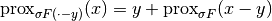

proximal_translation¶
-
odl.solvers.nonsmooth.proximal_operators.proximal_translation(prox_factory, y)[source]¶ Calculate the proximal of the translated function F(x - y).
- Parameters
- prox_factorycallable
A factory function that, when called with a step size, returns the proximal operator of
F.- yElement in domain of
F.
- Returns
- prox_factoryfunction
Factory for the proximal operator to be initialized
Notes
Given a functional
 , this is calculated according to the rule
, this is calculated according to the rule
where
 is the translation, and
is the translation, and  is the step size.
is the step size.For reference on the identity used, see [CP2011c].
References
[CP2011c] Combettes, P L, and Pesquet, J-C. Proximal splitting methods in signal processing. In: Bauschke, H H, Burachik, R S, Combettes, P L, Elser, V, Luke, D R, and Wolkowicz, H. Fixed-point algorithms for inverse problems in science and engineering, Springer, 2011.